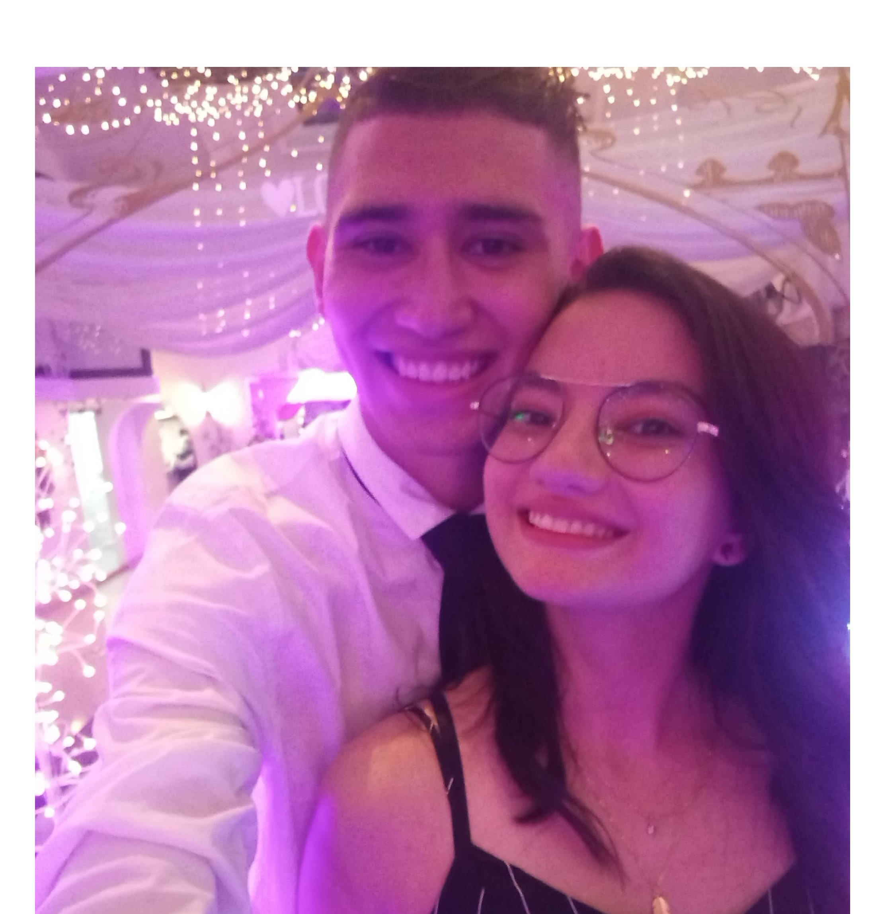
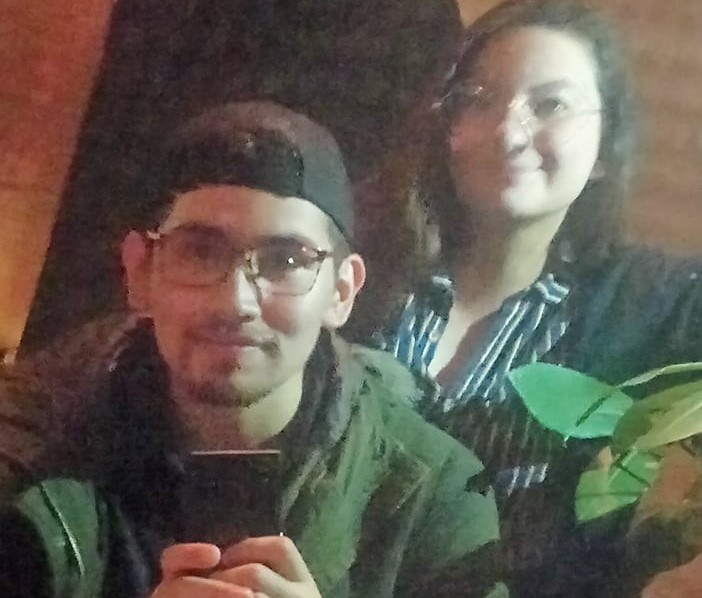
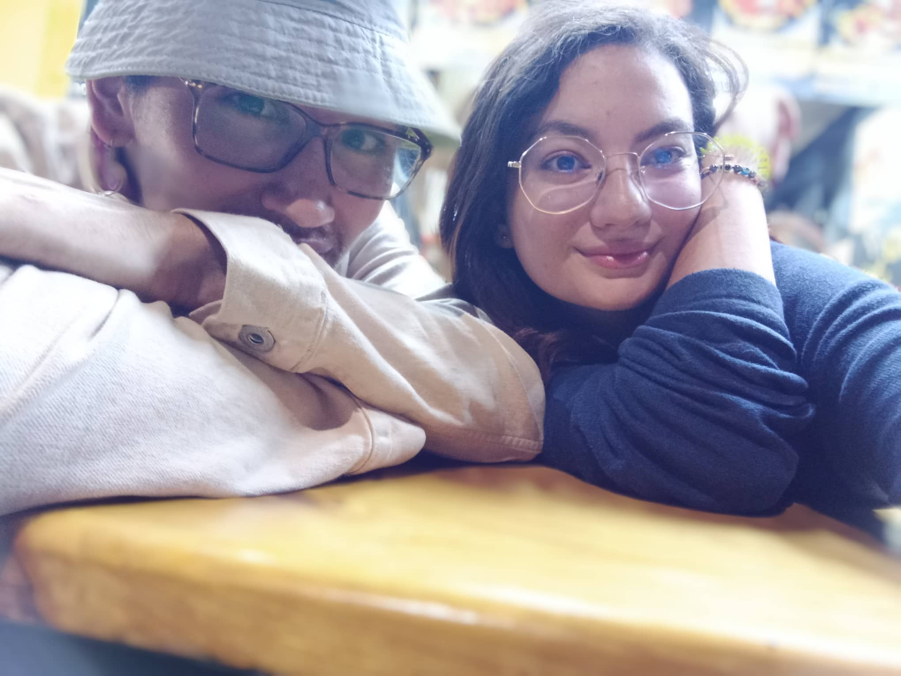
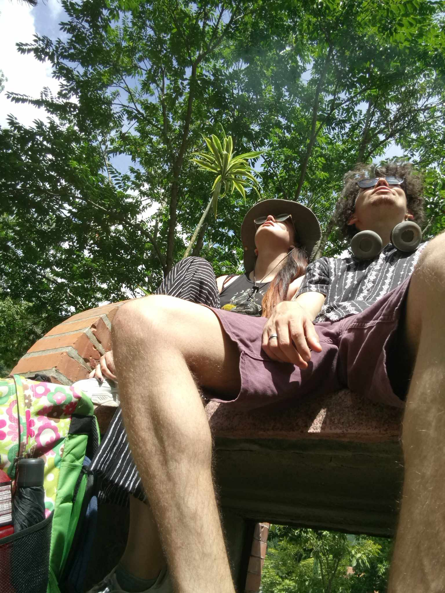
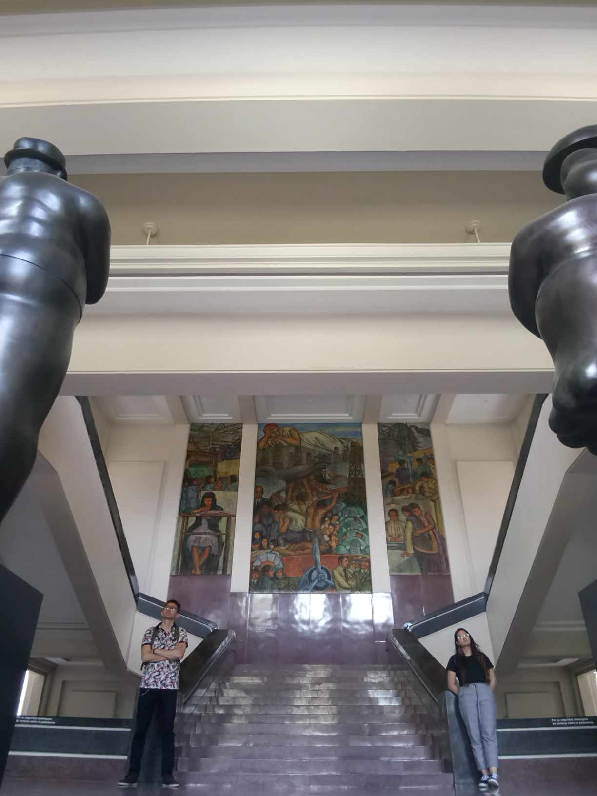
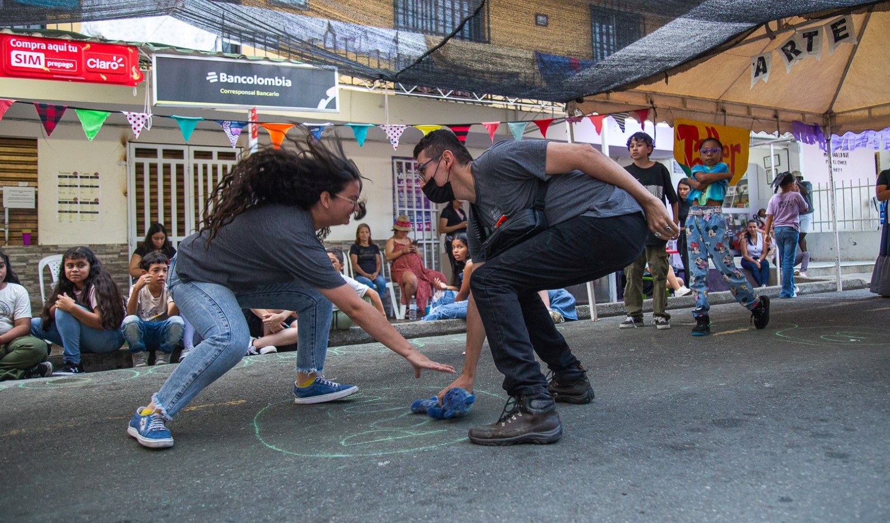

Esta vez, tal vez, tenga la mayor precisión de las palabras para nombrar, no un futuro ni aspiraciones del presente, sino para tomar los hechos y, a través de mi lengua, nombrarlos: la vida y el vacío.
Qué tan extraño es respirar, tragar agua, tocarse los músculos y los huesos, ejercer movimiento y ver agua correr desde donde algo produce una vibración: "tum, tum, tum, tum..."
Tú, más que cualquier persona externa a mí, puedes emitir un juicio ante las dos versiones de mi vida. Es evidente que en la segunda dejé de ser un tonto pretencioso que creía saberlo todo, para comenzar a cuestionar cada acto hecho, palabra dicha y sonido preferido. Pero esto no trata sobre mí, sino sobre ti, que durante los días, meses y años en los que consideré estar en el mismísimo infierno, estuviste allí observando. Estuviste emitiendo sonidos sobre por qué la vida es importante más allá del vacío y su construcción moral, porque tenernos enfrente es lo único que importa en el ahora.


Acompañarnos —quien diría que es el eje sobre el noviazgo y el compromiso— tiene una importancia mayor aún sobre el instinto del eros (animales en celo). Porque aun cuando quedo en ese eterno vacío, identificas al "yo constructor" y sus palabras al denegar y afirmar por qué la compañía es un beneficio o un perjuicio, según cómo se establezca por las emociones predominantes del ser existente. No es lo mismo una mujer llena de vida a una con decepción o comprometida con la misma; y aun con la opción de ser una tercera, la del compromiso, sigues decidiendo mantenerse en la primera.



Luego de este recorrido, idas, giros y pausas... son 10 años que tuvieron como comienzo el no buscar nada serio. Después vino el vínculo con un "yo" resentido, iracundo, nihilista, pesimista, existencialista e hipotéticamente nihilista. Te tengo un aprecio que, con honestidad, he mantenido desde que supe que después de esta vida no hay nada más. Compartir contigo los hallazgos, especulaciones, afirmaciones, experimentaciones y fallos importa, porque es el valor del amor al que tanto le hui, busqué, evité y ahora es.
Gracias, pequeña del espacio. Hace un año afrontamos el ¿para qué? de este amor; hace dos, el cómo era frente al odio; y hace cuatro, el qué era. Estas son respuestas que nos diferencian de otros resultados llenos de afán.
